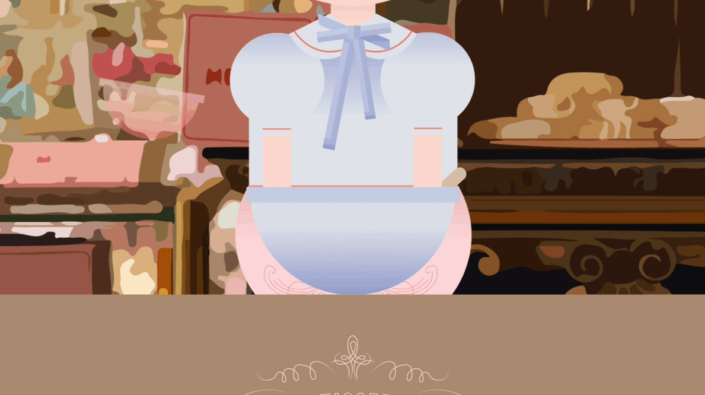
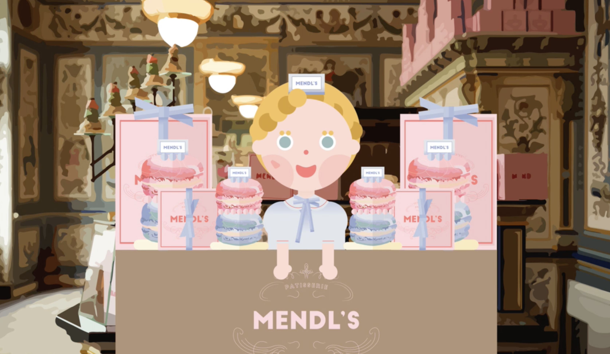

<!DOCTYPE html>
<html>
    <head>
        <meta charset="utf-8" />
        <meta name="viewport" content="width=device-width, initial-scale=1">
        <title>Interactive Video</title>
        <link rel="stylesheet" type="text/css" href="./css/styles.css">
        <link rel="preconnect" href="https://fonts.googleapis.com">
        <link rel="preconnect" href="https://fonts.googleapis.com">
        <link rel="preconnect" href="https://fonts.gstatic.com" crossorigin>
        <link href="https://fonts.googleapis.com/css2?family=Courier+Prime:ital,wght@0,400;0,700;1,400;1,700&family=Montserrat:ital,wght@0,100..900;1,100..900&display=swap" rel="stylesheet">
        <link rel="icon" type="image/png" href="dy_favicon.png">
    </head>
</html>
<body>
    <div class="mode-toggle">
        <button id="darkModeToggle">
            
        </button>
    </div>
    <header>
        <div class="language-selector">
            <a href="#" class="active">KR</a>
            <div class="lang-divider"></div>
            <a href="#">EN</a>
            <div class="lang-divider"></div>
            <a href="#">CN</a>
        </div>
    </header>
    <div class="sub-contents">
        
        <div class="sub-contents-text">
            <div class="sub-text-title">Overview</div>
            <div class="sub-text-p">
                인터랙션 비디오는 일반적인 비디오와 달리 시청자에게 선택의 기회를 제공하여, 시청자가 선택한 옵션에 따라 비디오의 흐름이 변하는 형식을 취합니다. 단순히 영상을 시청하는 것을 넘어서, 시청자가 직접 참여하고 이야기를 이끌어가는 경험을 제공합니다. 시청자는 각 선택지에서 노드를 따라가며 화면이 전환되도록 하여, 비디오 콘텐츠를 보다 능동적으로 즐길 수 있습니다.
                <br/><br/>
                이 프로젝트에서 저는 기획과 디자인 부분에서 50%의 기여도를 차지하였고 Photoshop을 이용해 그래픽 디자인을 작업한 후, After Effects를 통해 모션효과를 주어 비디오의 시각적 완성도를 높였습니다. 또한, 각 노드에 연결될 영상을 eko 웹사이트에 업로드하여 사용자가 선택할 수 있는 다양한 경로를 제공했습니다.
                <br/><br/>
                프로젝트는 ‘쿠킹’을 주제로 진행되었으며, 디자인 과정에서 영화 ‘그랜드 부다페스트 호텔’에서 영감을 받아 독창적이고 매력적인 비주얼 스타일을 구현하였습니다. 이러한 영감은 비디오의 색감, 그래픽 요소, 그리고 전반적인 미장센에 반영되었으며, 시청자들이 영화와 같은 몰입감 주려 하였습니다.
                <br/><br/>
                프로젝트 전반에 걸쳐, 시청자가 단순한 관찰자가 아닌 이야기를 직접 만들어가는 참여자로서의 역할을 할 수 있도록 하는 데 중점을 두었습니다. 이를 통해 인터랙션 비디오가 제공하는 새로운 형태의 미디어 경험을 효과적으로 전달할 수 있도록 기여했습니다.
            </div>
        </div>
                
                
        
        
        
        <div class="sub-contents-text">
            <div class="sub-text-title">Link</div>
            <div class="sub-text-p">
                    <a href="https://video.eko.com/v/zrBK3z">https://video.eko.com/v/zrBK3z</a>
            </div>
        </div>

    <footer>
        <p>&copy; 2024 Dayeong Kim. All rights reserved.</p>
    </footer>

    <script src="./js/scripts.js"></script>
</body>